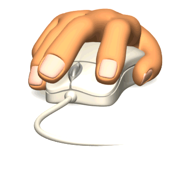

Click do Mouse
O click do mouse é uma das ações mais simples e comuns na interação do usuário com um computador. Ele consiste em pressionar um dos botões do mouse, geralmente o botão esquerdo, e soltá-lo rapidamente.
Os clicks do mouse são usados para realizar diversas tarefas, como selecionar um item na tela, abrir um menu, executar um programa, entre outras.
Clique em cada um dos pontos abaixo para prosseguir
1
2
3
4
5
Parabéns! Você clicou em todos os pontos. Para continuar, clique em "Próximo" no menu superior da tela.